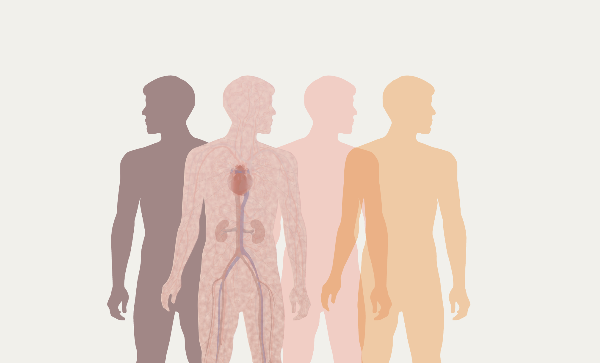
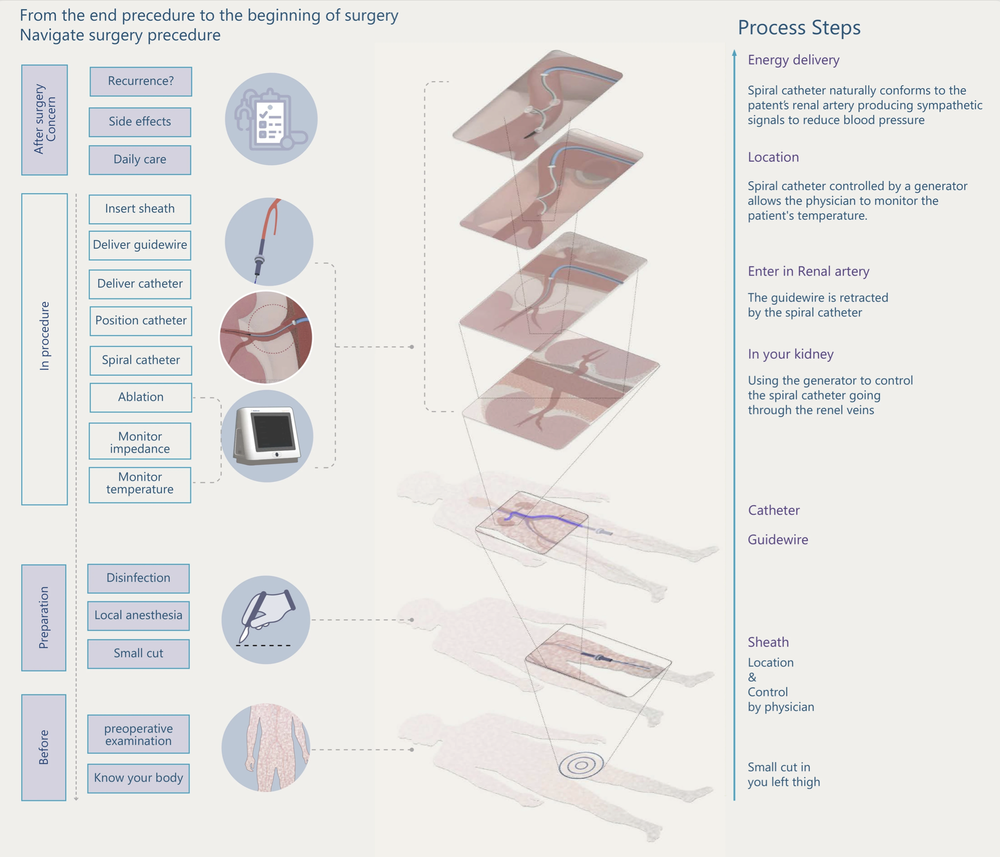

01 — Overall Strategy
Clinical Recruitment
Ecosystem
Most clinical trial websites are built for crisis patients—people with no options left.
But treatment-resistant hypertension patients aren't in crisis. They're managing.
How do you recruit someone who isn't desperate?
This project redesigns the entire recruitment journey around one thesis:
trust is the product.

02 — What did I do?
Role
UX Research · Strategy
Interaction Design
Wireframing · Hi-fi Mockups
Collaborators
Clinic physicians
Product Team
12+ retail stakeholders
Scope
Patient portal
Eligibility flow
Post-procedure system
03 — The Problem
Three parties, three deadlines, zero alignment
Company — fixed patient quota by a hard deadline.
Physicians — 8 minutes per clinic slot to introduce the procedure.
Patients — no immediate threat, no urgency to decide.
Existing sites — built for crisis patients; language reads as alarming to non-crisis users.

Before — Awareness
Medical knowledge anxiety
Clinical terminology with no accessible translation. Patients' response was avoidance, not engagement.
During — Enrollment
Consent document distrust
A 14-page form front-loaded with risks triggered the exact anxiety the site was meant to defuse. Drop-off spiked here.
After — Follow-up
Post-procedure abandonment
Recruitment ended at sign-up. No structured guidance for diet, monitoring, or follow-ups. Uncertainty bred regret.
04 — Research & Insights
The trust gap is measurable
Survey across 200+ patients showed a 30-point gap between in-person specialist communication and digital ads. The digital portal wasn't just less trusted—it was actively distrusted.
"A portal that carries a specialist's clarity—not a consent form's anxiety—can inherit the trust a clinic visit already built."

68.9%
trust information from specialist in clinic
~39%
trust digital ads for medical decisions
30pt
trust gap the portal needed to close
8 min
avg physician window to introduce trial
05 — Design Decisions
Research Finding — Before
68.9% trust specialist communication. 0% of existing sites replicate this. Medical terminology without translation creates cognitive load that reads as threat.
Design Response ✓
Layered disclosure: plain language first, clinical detail on demand—three tiers per page. Visual metaphors carry meaning the words can't.
Rejected alternative: standalone glossary page. Users don't navigate to reference pages—they need inline answers.
Research Finding — During
The 14-page consent form was the highest drop-off point. The problem wasn't the length—it was the sequence. Risks before context.
Design Response — Qualified Friction ✓
Counter-intuitive: I didn't simplify the flow—I reordered it. Benefits and evidence before risks. Branching eligibility screener that mirrors the specialist's checklist, so patients feel vetted, not trapped.
Trade-off: ~15% lower raw sign-up volume. Candidate quality improved—higher proportion passed clinical pre-screening.
Research Finding — After
7/10 patients said their biggest worry wasn't the surgery—it was "what my life looks like afterwards." Post-procedure anxiety was a pre-enrollment blocker.
Design Response ✓
Made the after-surgery hub publicly visible before sign-up. 90-day lifestyle guide, coordinator contact, follow-up schedule—all accessible to unenrolled patients. Showing what happens next converted the unknown from threat to expectation.

06 — End-to-End Journey
Awareness
Pain
Medical language reads as alarming. Patient disengages before reading.
Response
6-entry homepage by patient question, not company structure.
Education
Pain
30pt trust gap vs specialist conversation.
Response
Layered disclosure: visual → plain → clinical. Mimics specialist consultation sequence.
Enrollment
Pain
Consent form drop-off. Risks before context.
Response
Branching screener. Benefits before risks. Qualified friction.
Post-Procedure
Pain
"What's my life like after?" blocks pre-enrollment decision.
Response
After-surgery hub visible before sign-up.

07 — Outcomes
↑
Patient engagement
Significant increase in target population's willingness to engage with clinical research vs. baseline.
−26.4
mmHg at 36 months
Clinical outcome data surfaced in portal to build pre-enrollment confidence.
Higher
Candidate quality
Portal applicants passed clinical pre-screening at higher rates vs. cold referrals—improved self-selection through the eligibility flow.
Publishing the "10–20% of patients don't respond" disclosure was internally controversial. It didn't reduce sign-ups. Patients read it as a credibility signal—validating the core thesis: in a high-stakes medical context, honesty outperforms optimism as a conversion strategy.